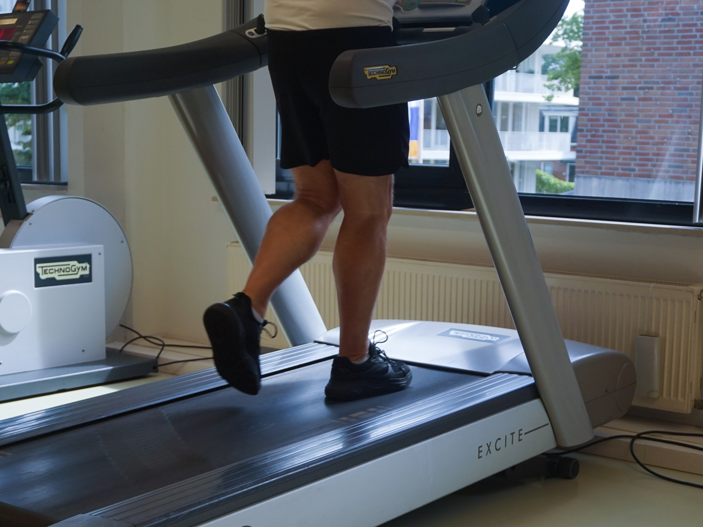

Looptraining bij etalagebenen
Claudicatio intermittens staat in de volksmond bekend als etalagebenen. Bij etalagebenen zijn de slagaders van het been door aderverkalking vernauwd. De slagaders vervoeren zuurstofrijk bloed. Hierdoor kunnen deze minder bloed aanvoeren en gaat er dus ook minder zuurstof naar de benen. Dit kan leiden tot pijnklachten. Er zijn verschillende factoren die de kans op verkalking in de slagader van het been kunnen vergroten, zoals roken, hoge bloeddruk, te hoog cholesterolgehalte in het bloed, suikerziekte, overgewicht, te weinig beweging en erfelijkheid. Deze risicofactoren versterken elkaar. Met etalagebenen heeft u vaak het gevoel dat uw benen pijnlijk, verkrampt en vermoeid aanvoelen wanneer u een stukje loopt. U kunt dit gevoel hebben als u normaal beweegt, maar u kunt de klachten ook pas voelen wanneer u op een hoger tempo beweegt. Op het moment dat uw klachten heeft, moet u door de pijn wel stoppen met uw activiteit. Uw spieren komen dan tot rust en uw lichaam kan het zuurstoftekort weer aanvullen waardoor u weer verder kunt met u activiteit.
Op lange termijn is het goed om uw klachten te laten behandelen door de fysiotherapeut. De fysiotherapeut adviseert u en geeft u oefeningen. Als u deze oefeningen goed blijft uitvoeren, heeft u hier op lange termijn veel profijt van. Als u tijdig actie onderneemt, zorgt u ervoor dat uw klachten verminderen en zelf zullen verdwijnen. Dit met behulp van looptraining onder begeleiding van een fysiotherapeut.

Opvang, adoptie en afstand Konijnen en cavia’s die om verschillende redenen niet meer bij hun laatste eigenaar kunnen wonen, worden hier opgevangen en begeleid naar een nieuw huisje. Gelukkig weten ook mensen die een dier willen adopteren ons steeds beter te vinden waardoor de dieren over het algemeen niet lang bij ons hoeven te verblijven. In de periode dat ze wél bij ons verblijven doen wij er alles aan om konijnen weer echt konijn te laten zijn. Ze worden natuurlijk voorzien van hun natje en droogje en een schoon hok. Als de weersomstandigheden dat toelaten mogen ze elke dag buiten rennen en spelen. Ook krijgen ze aandacht en werken we met getraumatiseerde maar ook met jonge dieren aan (her)socialisatie.
Hoe ziet therapie bij etalagebenen eruit?
De fysiotherapeut zal met u een looptrainingsprogramma opstarten. Dit is nodig om de bloedtoevoer in de benen opnieuw te stimuleren. Op deze manier kunt u met looptraining ook uw coördinatie- en uithoudingsvermogen verbeteren. De fysiotherapeut streeft ernaar dat u zelfstandig uw klachten onder controle kunt krijgen en helpt u om zelfstandig te blijven bewegen en gezond te leven.
Binnen fysiotherapie De Merk is Elske aangesloten bij het Claudicationetwerk en dus geschoold om groepen mensen met deze klachten te begeleiden.